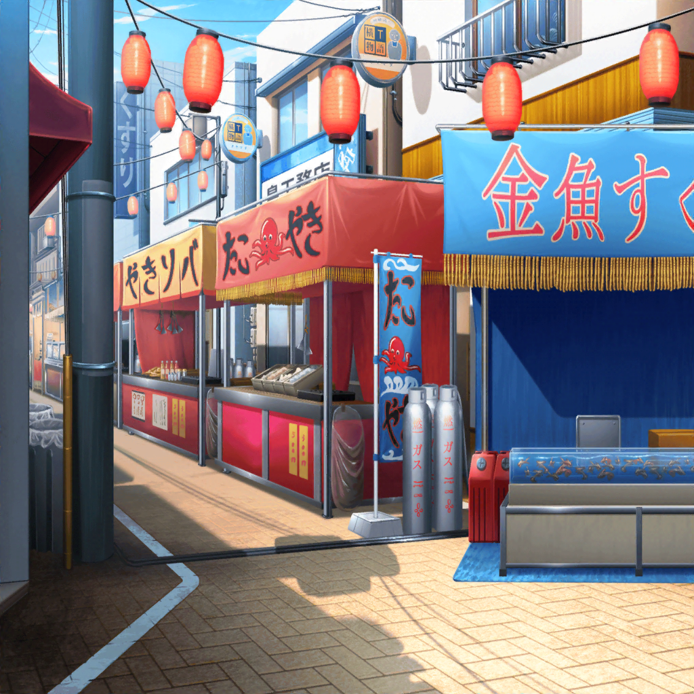

商店街 特設ステージ横
香澄
ふぃ～……。終わったぁ……
たえ
終わった、ね
りみ
つっ……疲れた～……
有咲
調子に乗ってアンコール３回もやるからだっての……
香澄
えー。いいじゃん、みんな喜んでくれてたし。
それに、楽しかった！
たえ
うん
有咲
……まあ、それは認めてもいいけどさ。
そうだな。……楽しかったよな
沙綾
香澄～。みんなも。
ぐったりする気持ちもわかるけど、
あんまりノンビリしてると、出店、終わっちゃうよ？
香澄
……あ！ 飴細工！ ポピパキャンディー！
沙綾
そうだっ！ ちょっとバタバタしててすっかり忘れてた！
作りにいかなくちゃ！
香澄
うんっ、作ろうっ！！
たえ
行く

香澄
むむむ……もう、ちょっと……
有咲
おい、なんか、曲がってるぞ、そっち。
それじゃ星じゃなくてヒトデだって
香澄
難しいよ～。
有咲も手伝って～！
りみ
わっ。沙綾ちゃん、形きれいだね！
沙綾
一応、パン屋の娘だからね。
……たえはさっきから、なに作ってるの？
たえ
香澄
香澄
えっ
たえ
と、有咲
有咲
ちょっ。私、そんな丸顔じゃねーし！
沙綾
いやあ、結構、特徴とらえてるよ。
かわいいかわいい
有咲
ほめられてる気、しないんだけど
区役所職員
……君達か
香澄
あっ。
まだ、なにか……？
区役所職員
いえ、たまたま通りがかっただけだ。
……そうだ。来年の、祭りの話だが……
香澄
！
有咲
（また難癖つけてくる気か？
来年こそ祭りは廃止だ、って……）
区役所職員
また演奏をするつもりなら、事前に届け出てるように。
騒音対策など、我々にも仕事があるからな
有咲
へ？
たえ
それって
りみ
来年もお祭り、やっていい……ってことですか？
区役所職員
この人気を見る限り、そうせざるを得ないだろう。
私だって、区民の味方だ
祭りは来年以降もずっと、開催すると約束するよ
区役所職員
……正直、君達を女子高生と甘く見ていた
君達の行動力や、団結力や、希求力。そういった――
たえ
絆
区役所職員
はい？
香澄
えへへ、そうそう。
全部、みんなの絆のおかげです。たぶん！
区役所職員
なるほど、絆……か。私達大人が区を守るために動いたように、
君達のような子どもたちにしかできないこともあるんだな。
君達から１つ、学ぶことができたよ
有咲
参った、って正直に言えばいいのに。
素直じゃないやつ
沙綾
ふふ。有咲がそれ、言うんだ
りみ
そ、それより、お祭り！ 来年もあるって……！
たえ
うん。区も予算、出してくれるみたいだね
香澄
よかった！ よかったよ～！
みんな本当にありがとう～！
有咲
だからくっつくなって、暑苦しい！
ただでさえ人口密度高いんだから！
沙綾
確かにちょっと、息苦しくなってきたね……
飴もできたことだし、ちょっと落ち着けるとこ、行かない？

香澄
じゃーんっ！ ポピパキャンディ～！
たえ
おそろい
りみ
かわいい～。
食べるのがちょっともったいないよ～
沙綾
大丈夫、大丈夫。来年もあるから。ね？
香澄
うんっ。来年もみんなで食べようね！ 絶対！
沙綾
きっと、この先何度お祭りがやってきても、
今日のことを思い出すんだろうね
香澄
色々あったもんね〜。
このキャンディーはその思い出の一品ってことで！
たえ
また１つ、みんなとの思い出ができた
りみ
うん。こうやってたくさん思い出、増やしていきたいね。
来年のお祭りも今から楽しみになってきちゃった♪
有咲
お祭りだけか〜？
香澄
あっ、ライブも！
たえ
曲も。また、作ろう。みんなで
沙綾
じゃあ、また合宿しなくちゃ。
有咲、よろしくね
有咲
ゲッ。……次はどっか、他んとこにしねえ？
りみ
だったら旅行？ それもいいかも……
香澄
みんなとだったら、きっとなにしても楽しいよ。
これからも楽しいこと、たくさんしよう！
香澄
私たち、最高の仲間だよ！
これからも、ずーーーーっと！！